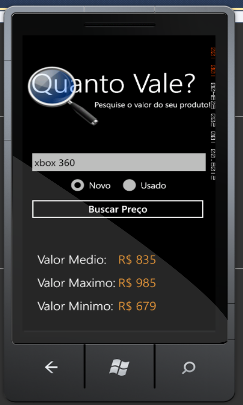

Price Check - A WP7 Application
This app works using a Brazlian website (MercadoLivre) to predict the ideal price for any product, new or used, based on the average products price listed on MercadoLivre. The app shows the Max, Lowest and the Average price with this information the user is able to sell the product based on the current market price.
Code
The programming language used for this project was Visual Basic .Net for Windows Phone 7. At the time i liked VB over C# but today is clear C# has a bigger community in Windows Phone development.
Why
The idea was to make a application to help people sell products or have an idea about the price of one product they are thinking about buying. Thats why its a simple and fast application.
Preview
Here is a picture of the application, the language is Brazilian Portuguese.
